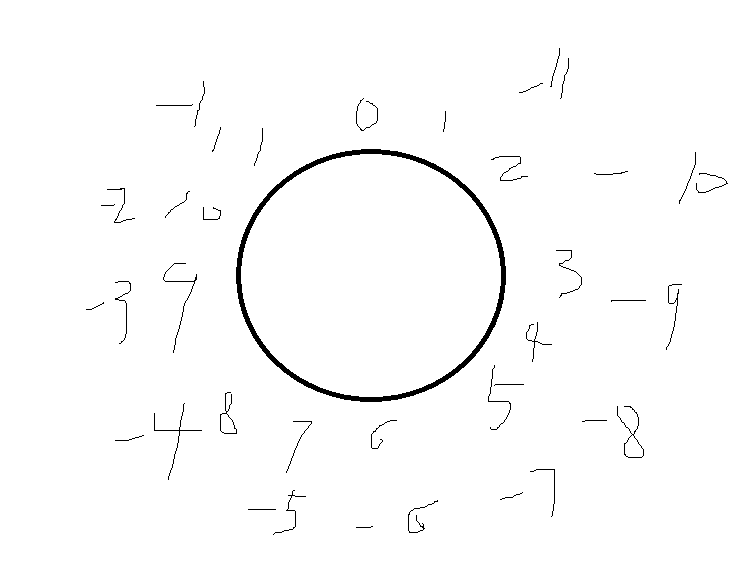
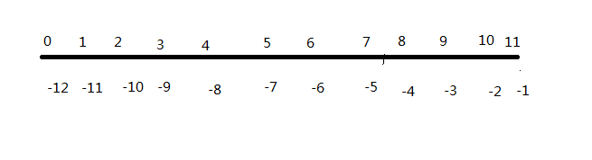

1 array_slice ( array $array , int $offset [, int $length = NULL [, bool $preserve_keys = false ]] ) : arrayarray_slice（）这个从数组中取出一段的函数，需要传递一些整型数字来指明使用者需要目标数组中的哪一个段。
当第二参数 $offset ，和第三参数 $length 长度都是整型正整数的时候，用环形角度理解数组索引还是线段角度理解数组的索引，事实上没什么太大区别。
但当这两个参数中有一个是整型负整数时，用环形角度来理解数组索引更为统一。
人类理解抽象事物总是设法与其脑海中建立的形象模型关联，于是我们首先得有下面图中的这两种概念，图中的数字代表了数组的索引。
第一幅图是环形，起点为0，顺时针为正方向，逆时针为负方向

第二幅图是线段形，起点为0，朝右为正方向，朝左为负方向

然后再考虑这两种形象模型在具体的例子中的表现。
第一种情况：
1 $arr_long = [1, 2, 3, 4, 2, 6, 2, 8];//没有贴上打印输出，自然不是忘了
2 var_dump(array_slice($arr_long, 2, 3));环形和线段形都可以这样描述：从偏移量为2的地方，向正方向截取3个长度，然后返回这一段所组成的数组。
第二种情况：
1 $arr_long = [1, 2, 3, 4, 2, 6, 2, 8];//没有贴上打印输出，自然不是忘了
2 var_dump(array_slice($arr_long, -2, 3));//这种情况下返回的数组只有两个元素环形描述：从偏移量为-2的地方，向正方向截取3个长度，然后返回这一段所组成的数组。（偏移量-2，只是为了理解而统一化的说法，具体有没有类似的编程概念，该问谁呢？）
线段形描述：从倒数第二个元素，向正方向截取3个长度，然后返回这一段所组成的数组。
第三种情况：
1 $arr_long = [1, 2, 3, 4, 2, 6, 2, 8];//没有贴上打印输出，自然不是忘了
2 var_dump(array_slice($arr_long, 2, -3));环形描述：从偏移量为2的地方，向着正方向一直截到偏移量为-3的地方（不包括偏移量为-3的元素），然后返回这一段所组成的数组。（偏移量-3，这样的说法目的同上。）
线段形描述：从偏移量为2的地方，向着正方向一直截到倒数第三个元素的地方（不包括倒数第三个元素），然后返回这一段所组成的数组。
推论：
从环形的角度来理解数组，更为的方便快捷，因为环形描述的套路是一致的。
备注：
虽然还有类似这样的情况：
1 $arr_long = [1, 2, 3, 4, 2, 6, 2, 8];
2 var_dump(array_slice($arr_long, -2, -3));输出为：
1 [Running] php "d:\workspace\test.php"
2 D:\workspace\test.php:3:
3 array(0) {
4 }
5
6 [Done] exited with code=0 in 0.512 seconds有哪个家伙会自找麻烦，用这种方法搞来搞去？